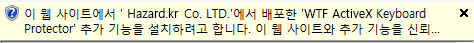
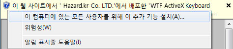
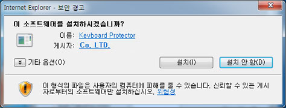

화면상단의 노란색 알림 표시줄의 "ActiveX 추가 기능 설치"를 선택하셔서 설치해 주시기 바랍니다.
키보드보안 프로그램 설치가 정상적으로 완료되면 자동으로 다음화면으로 이동됩니다.
STEP 01
1. WTF ActiveX 가 적용된 웹 페이지에 최초로 접속하면 다음과 같이 설치가 진행됩니다.

2. ActiveX 설치 표시줄이 뜨면 다음과 같이 추가 기능 설치를 클릭합니다.
* 키보드 접근방법(인터넷 익스플로러에서만 적용) - Alt + N 단축키를 누르면 엑티브액스를 실행시킬 수 있도록 포커스가 이동 됩니다. - 포커스 이동후 스페이스바를 누른후 엑티브액스 컨트롤설치(이 컴퓨터에 있는 모든 사용자를 위해 이 추가 기능 설치) 메뉴를 방향키로 선택하여 설치 하시기 바랍니다.

3. 다음과 같은 보안 경고 창이 표시되면 "설치(I)" 버튼을 선택하여 키보드보안 프로그램을 설치합니다.

보안프로그램이 자동으로 설치되지 않을 경우나 현재화면에서 정지되어 있는 경우 아래의 [수동설치] 버튼을 클릭하여 프로그램을 수동으로 설치하시기 바랍니다.
키보드보안 프로그램의 설치를 원하지 않을 경우, 아래의 [설치하지 않고 진행] 버튼을 클릭하여 진행할 수 있습니다. 키보드보안 프로그램을 설치하지 않을 경우, 입력되는 정보가 키보드 해킹에 노출 될 수 있습니다.